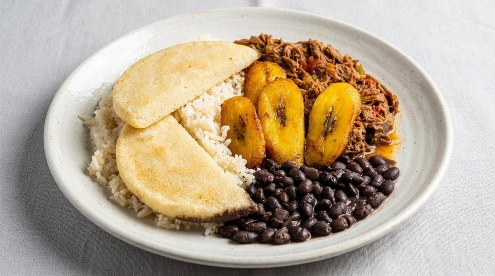

Venezuelan breakfast plate
Black beans, scrambled eggs with tomato, white cheese and a hot, fresh arepa. A change from the usual breakfast.
Latin flavors · East Buick Cadillac Blvd, Bloomington
Index of the menu
Arepas, huevos a la Mexicana and horchata matcha lattes in a plant-filled room.

What to order
Breakfast, brunch and drinks with Venezuelan, Mexican and Puerto Rican roots.
Black beans, scrambled eggs with tomato, white cheese and a hot, fresh arepa. A change from the usual breakfast.

Huevos a la Mexicana with crispy house potatoes, breakfast sandwiches, burritos and asada fries.

Horchata and matcha lattes, fresh-squeezed orange juice and a full drink menu.
4.5 / 5 · 408 Google reviews
1Outstanding! The food is amazing. The staff are friendly and very competent. We have never once felt rushed regardless of the size of our brunch party. And the patio dining option is awesome. I can get around in my wheelchair just fine. And I'm confident that if I couldn't, they'd still make it work. Can't say enough good things!
2I’ve been here several times and I’ve loved everything I’ve gotten! There’s a great variety of both American and Latin options. It’s not like every other Mexican restaurant. There are unique dishes I hadn’t had before. Absolutely delicious options for those that don’t eat meat, too. I highly recommend you check out their drink menu with coffees, lattes, and teas. Very underrated!
3This restaurant was great. First I loved the option for outdoor seating on a summer rainy day. Our server was very friendly and I forgot his name. I got the traditional Venezuelan Plate. It’s was really good and great change of normal breakfast pace. Black Beans, scrambled eggs, tomatoes, white cheese and an Arepa. It’s was really good and the flavors blended perfectly. The Arepa was hot and so fresh.
About
Arepas, Venezuelan breakfast plates, burritos and a long list of vegan options.
Teal tile, woven pendant lights and hanging greenery over the booths, with Latin music playing. A patio is open when the weather is good.
Many recipes are corn meal based, so the kitchen can accommodate almost anything on the menu without gluten. Friendly, capable service.

Visit
2800 E Buick Cadillac Blvd, Bloomington, IN 47401
On East Buick Cadillac Boulevard. Patio seating available, and big brunch groups are welcome.